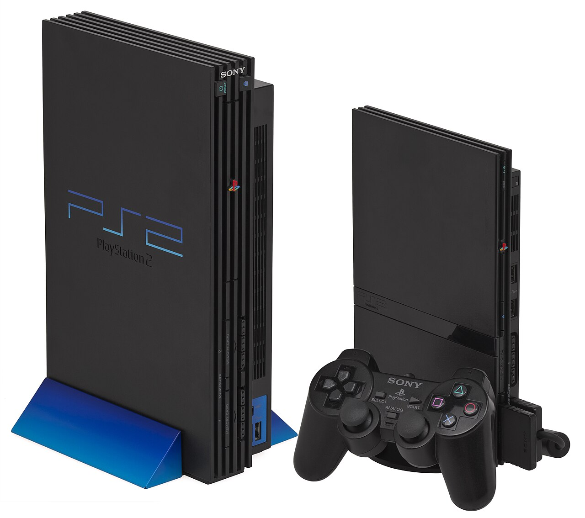

PlayStation 2 (2000)
Coloque aqui a foto:

(sugestão: Wikimedia Commons, anotando a fonte)Tocava DVDs e rodava jogos do PS1, o que ajudou muito nas vendas. Passou de 150 milhões de unidades e teve um catálogo gigantesco.
Jogos que marcaram
- Grand Theft Auto: San Andreas
- Shadow of the Colossus
- God of War
- Kingdom Hearts
Oque o PlayStation 2 significou:O PlayStation 2 representou a consolidação dos videogames como uma das maiores formas de entretenimento do mundo, expandindo a experiência dos jogos e aproximando ainda mais a tecnologia do cotidiano das pessoas. Lançado em 2000, o console da Sony se tornou um dos maiores fenômenos da história dos videogames. Com uma biblioteca extremamente diversificada, suporte a DVDs, retrocompatibilidade com jogos do primeiro PlayStation e uma grande variedade de experiências, o PS2 ultrapassou o papel de um simples console e se tornou parte da cultura de milhões de pessoas.